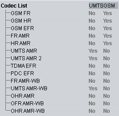

Codec UE Capabilities
This section provides codec UE capabilities.

Codec UE capabilities
Indicates which codec the UE supports in UMTS and GSM networks.
This list comprises the following codec types:
- Full rate, half rate and enhanced full rate for GSM
- Five adaptive multi-rate codec types (FR AMR, HR AMR, UMTS AMR, UMTS AMR2, OHR AMR)
- TDMA enhanced full rate
- PDC enhanced full rate
- Four adaptive multi-rate wideband codec types (FR AMR-WB, UMTS AMR-WB, OFR AMR-WB, OHR AMR-WB)
The speech codec list for GSM and UMTS is defined in 3GPP TS 26.103 section 6.3.
Remote command: